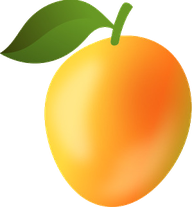

Assistente de IA para o seu computador — modelos locais que rodam na sua máquina, agentes com ferramentas e automações.
carregando versão…ou instale via terminal: brew install --cask dheiver2/mangaba/mangaba (macOS) · winget install DheiverSantos.Mangaba (Windows, em aprovação)
Nada de "créditos" que evaporam no meio da tarefa. Modelo local grátis para sempre, ou a sua própria chave de API — o custo é seu de ver, não nosso de esconder.
Roda só na sua máquina, fechado em localhost. Toda ação de risco — enviar mensagem, mexer em dado externo — passa por um pedido de aprovação seu. Nada de agente exposto na internet.
Lê e escreve arquivos, roda comandos, calcula por script (nunca de cabeça), pesquisa na web e agenda rotinas. O entregável aparece na sua pasta.
Automação que entregou pela metade aparece como "parcial", com o motivo — nunca como sucesso. O histórico diz o que aconteceu, não o que você queria ouvir.
Você anexa a planilha de contas a receber. Ele separa por tempo de atraso, calcula os totais por script e devolve uma mensagem pronta por cliente — tom mais firme conforme o atraso. Nada é enviado sem você aprovar.
Cole as notas da reunião e receba a ata com decisões, responsáveis e prazos — e as tarefas criadas no seu quadro, cada uma com dono. Sem a reunião sair da sua máquina.
Consolida as planilhas, calcula margem e indicadores com script Python e monta o dossiê para a diretoria — com os números conferidos contra a saída do script antes de entregar.